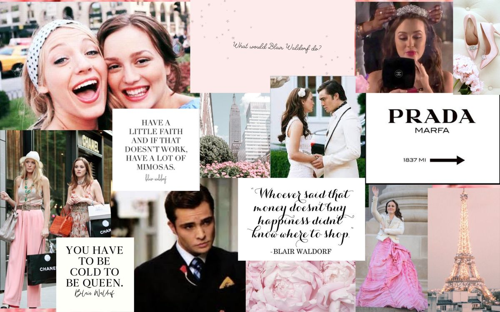

Step into the captivating world of "Gossip Girl," where the glamorous lives of Manhattan's elite unfold in a whirlwind of scandal, fashion, and intrigue. This iconic TV series takes us on a thrilling journey, delving into the intertwining lives of privileged teenagers from the Upper East Side. From the moment the first anonymous Gossip Girl blast is sent, we're hooked, eagerly following every juicy revelation and shocking secret that rocks the lives of our favorite characters.
Set against a backdrop of exquisite fashion, extravagant parties, and the alluring allure of New York City, "Gossip Girl" presents a seductive blend of high society and teenage rebellion. We become immersed in the world of Blair Waldorf, the queen bee with a heart of gold, and Serena van der Woodsen, the enigmatic socialite with a past. Alongside them, we encounter a colorful ensemble of characters, each with their own captivating storylines and distinctive personalities.
Indulge in the captivating drama, savor the stylish fashion moments, and allow yourself to be whisked away into a world where the allure of the Upper East Side is irresistible. "Gossip Girl" promises a journey that will keep you glued to your screen, craving the next tantalizing revelation. So, grab your headband, slip into your favorite designer heels, and get ready for an unforgettable ride as we unravel the enigmatic mysteries and scandals of the one and only "Gossip Girl." Remember, dear readers, you know you love it. XOXO.
Get ready to immerse yourself in the vibrant and electrifying atmosphere of the Exit festival in Novi Sad, Serbia. This internationally renowned music festival has become a beacon for music lovers from around the globe. Set against the backdrop of the stunning Petrovaradin Fortress, Exit offers an unforgettable experience that transcends mere music performances. From the moment you step foot on the festival grounds, you're greeted with a kaleidoscope of sounds, genres, and cultures. From rock and electronic music to hip-hop and reggae, Exit curates an impressive lineup of world-class artists that cater to diverse musical tastes. As the sun sets over the fortress, the air becomes charged with excitement, as festival-goers dance, sing, and connect under the starry night sky. With its unique blend of music, art installations, workshops, and an infectious spirit of unity, Exit Festival has rightfully earned its place as one of the most iconic and unforgettable music events in the world. Prepare to surrender yourself to the rhythm, let the music take hold, and create memories that will last a lifetime at Exit festival in Novi Sad, Serbia.